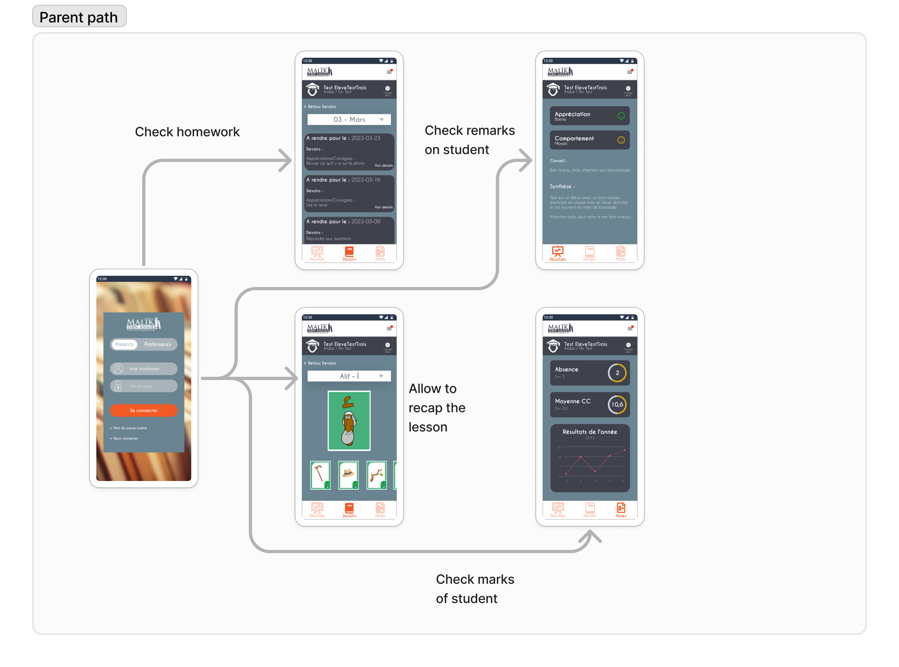
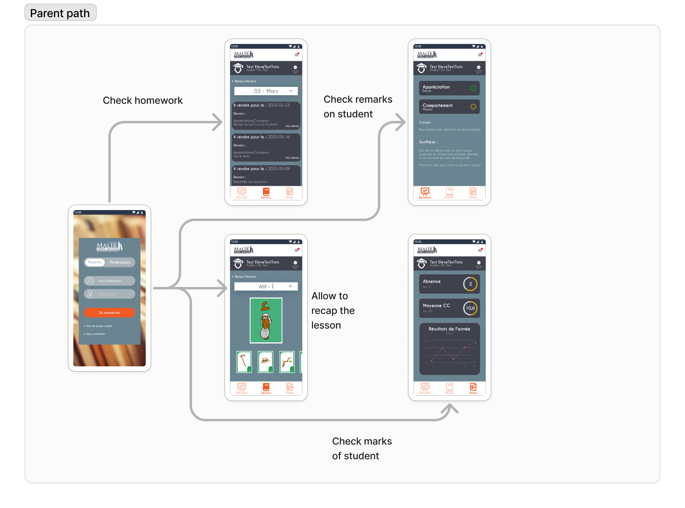

Application Parents – Professeurs
Rôle : Product Designer bénévole | Projet pour un institut en langue arabe
Une application web et mobile pour simplifier la communication entre enseignants et familles dans un institut d’enseignement de la langue arabe.
Contexte & Enjeux
L’institut rencontrait des difficultés à transmettre les informations aux familles : devoirs, absences, urgences, rappels… Les outils utilisés (papiers, appels téléphoniques, groupes informels) étaient chronophages, dispersés et peu fiables.
Le défi : créer un canal unique, simple et bilingue (français–arabe), utilisable par des parents peu technophiles.
Mon rôle
J’ai accompagné le projet de bout en bout : recherche, conception, test et suivi du développement. Objectif : fluidifier la communication tout en respectant les réalités du terrain (temps, niveau digital, langues).
- Entretiens avec parents et enseignants
- Ateliers de co-conception avec l’équipe pédagogique
- Wireframes et prototypes haute fidélité (Figma, en arabe)
- Tests utilisateurs avant mise en ligne
Résultats & Impact
- ✅ 67 % des parents utilisent l’application plusieurs fois par semaine
- ✅ Note moyenne de satisfaction UX : 4.8/5
- ✅ 50 % des parents la jugent complète, 17 % souhaitent de nouvelles fonctionnalités
- ✅ Retour terrain : meilleure réactivité entre école et familles
Idéation & Prototypage
J’ai conçu un prototype complet en arabe, testé auprès des familles et enseignants pour m’assurer de l’ergonomie et de la lisibilité.
Voir le prototype Figma
Design final


À propos du projet & de mon rôle
En tant que Designer Produit bénévole, j’ai rejoint ce projet initié par l’Institut Malik Ibn Anas. L’objectif était de faciliter la communication entre parents et enseignants dans une école coranique. Le besoin est né d’une douleur terrain concrète : les professeurs perdaient énormément de temps à contacter les parents individuellement par WhatsApp, ce qui nuisait à leur concentration et à leur gestion de classe.
- ✅ Contexte réel : enseignants bénévoles, parents très impliqués, école sans budget tech.
- ✅ Conception de A à Z : ateliers, wireframes, prototypes, tests.
- ✅ Projet en production : l’app est utilisée depuis mars 2025.
Problème
L’école utilisait WhatsApp et des tableaux Excel pour transmettre les informations : retards, absences, devoirs… mais cela générait des oublis, des confusions et un surmenage côté enseignants. Les parents étaient aussi frustrés par le manque de visibilité. Il fallait centraliser la communication dans une interface simple, claire, et adaptée à tous les profils.
Enjeux & Contraintes
Le contexte bénévole et associatif impliquait :
- ✅ Aucun budget, donc outils gratuits (Figma, Notion, Google Sheets...)
- ✅ Professeurs non technophiles, donc interface ultra-intuitive
- ✅ Pas d’application mobile native, donc version web responsive
Recherche utilisateur
Nous avons réalisé :
- ✅ Des entretiens avec les enseignants et les responsables pédagogiques
- ✅ Un benchmark de solutions existantes (apps de classe, gestion scolaire…)
- ✅ Une priorisation des besoins selon la méthode MoSCoW
Personas
Parcours Utilisateur
Mamadou – Enseignant
Phase : Connexion pour gérer ses classes
- Émotions : 😊 Concentré, 😌 Rassuré
- Douleurs : lenteur du dashboard, navigation complexe.
- Opportunités : ✅ Dashboard rapide avec résumé clair des classes.
Phase : Ajouter un devoir pour une classe
- Émotions : 😊 Productif, 😎 Confiant
- Douleurs : trop d'étapes pour ajouter un devoir, ajout de pièce jointe difficile.
- Opportunités : ✅ Process simplifié, ajout de fichier + date intuitive.
Phase : Vérification de présence
- Émotions : 😊 Organisé, 😌 Détendu
- Douleurs : erreurs ou crash lors de la mise à jour des présences.
- Opportunités : ✅ Marquage de présence simple avec auto-sauvegarde.
Hamza – Parent
Phase : Consultation des devoirs
- Émotions : 😊 Curieux, 😌 Rassuré
- Douleurs : navigation difficile vers les devoirs, peu de lisibilité.
- Opportunités : ✅ Accès simple avec distinction clair entre devoirs à venir / faits.
Phase : Signature d’un document
- Émotions : 😊 Efficace, 😎 Serein
- Douleurs : processus de signature numérique peu fiable.
- Opportunités : ✅ Signature fluide et sécurisée avec confirmation.
Phase : Voir les notes et présences
- Émotions : 😊 Informé, 😌 Satisfait
- Douleurs : données trop denses ou mal organisées.
- Opportunités : ✅ Résumé clair et visuel des notes et présences.
Processus de Design
J’ai accompagné le client sur tout le cycle UX :
- ✅ Définition des MVP (absences, devoirs, messages)
- ✅ Maquettes sur Figma, feedbacks réguliers
- ✅ Tests utilisateurs avec les enseignants
 

Idéation & Prototypage
J’ai conçu des wireframes et un prototype haute fidélité sur Figma.
Chaque écran a été pensé pour simplifier la tâche des parents et des enseignants.
Voir le prototype FigmaMockups & Interface
Résultats & Retours
Méthodologie
- ✅ Scénarios réels : tests sur des cas quotidiens.
- ✅ Feedback itératif : améliorations basées sur les retours enseignants / parents.
Retour des utilisateurs
Interface intuitive et gain de temps plébiscité des deux côtés. Les parents adorent la centralisation, les enseignants la simplicité de saisie.
Problèmes rencontrés
- ✅ Onboarding : garantir l'accessibilité aux utilisateurs peu à l’aise avec le numérique.
- ✅ Compatibilité : adapter le design à d’anciens appareils.
Résultats
- ✔️ 67% des parents utilisent l'application plusieurs fois par semaines
- ✔️ La note de l'UX est de 4.8/5
- ✔️ 50% jugent l'application complète, 17% veulent des ajouts supplémentaires
- ✔️ Des retours utilisateurs pour de nouvelles fonctionnalités
Outils utilisés
- ✅ MakeMyPersona (Hubspot) pour les personas.
- ✅ Photoshop pour les écrans.
- ✅ Figma pour les prototypes.
- ✅ Trello pour la gestion agile.
- ✅ Microsoft (Forms, Teams, Whiteboard) pour les tests et brainstormings.